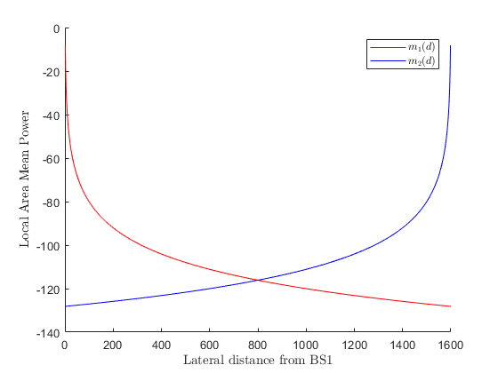
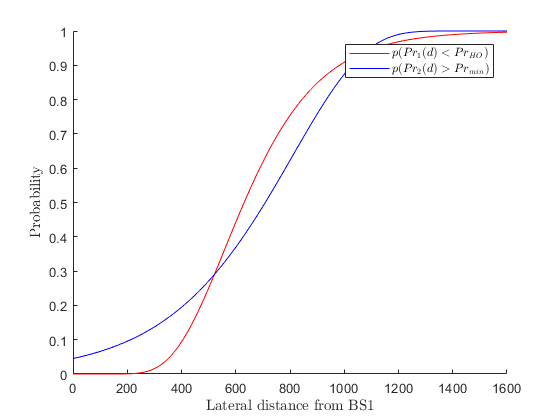
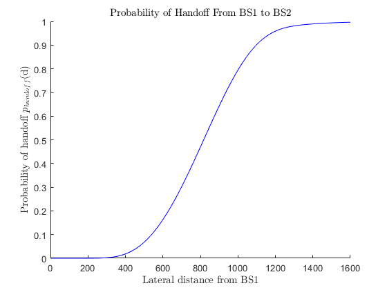

David Dobbie 300340161
ECEN 310 Assignment 3, Question 3
clear all; clc; clf; set(0,'defaultTextInterpreter','latex'); n = 4; sigma_dB = 6; sigma_dBm = sigma_dB; P0_dBm = 0; do = 1; Pr_min_dBm = -118; Pr_HO_dbm = -112; D = 1600; d_one = linspace(0,D,1000); mu_one = P0_dBm - 10*n*log10(d_one/do); p_one = qfunc((mu_one - Pr_HO_dbm)/sigma_dBm); mu_two = P0_dBm - 10*n*log10((D-d_one)/do); p_two = 1- qfunc((mu_two - Pr_min_dBm)/sigma_dBm); figure(1) hold on plot(d_one, mu_one,'r') plot(d_one, mu_two,'b') xlabel('Lateral distance from BS1') ylabel('Local Area Mean Power') l1 = legend('$m_1(d)$','$m_2(d)$'); l1.Interpreter = 'latex'; hold off figure(2) hold on plot(d_one, p_one,'r') plot(d_one, p_two,'b') xlabel('Lateral distance from BS1') ylabel('Probability') l1 = legend('$p(Pr_1(d) < Pr_{HO})$','$p(Pr_2(d) > Pr_{min})$'); l1.Interpreter = 'latex'; hold off p_handoff = p_one.*p_two; %assumes P1 P2 independent figure(3) hold on plot(d_one, p_handoff,'b') xlabel('Lateral distance from BS1') ylabel('Probability of handoff $p_{handoff}$(d)') title('Probability of Handoff From BS1 to BS2') hold off  